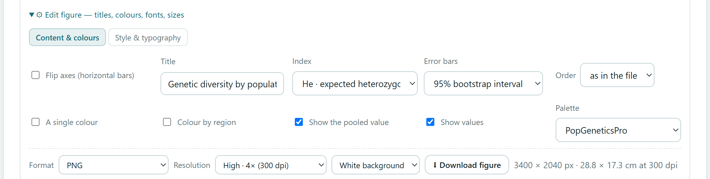
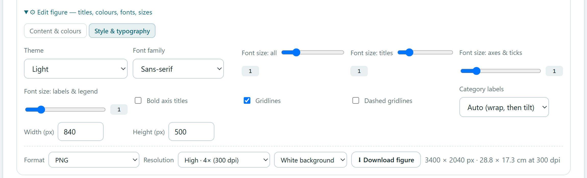
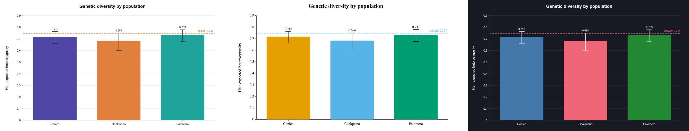
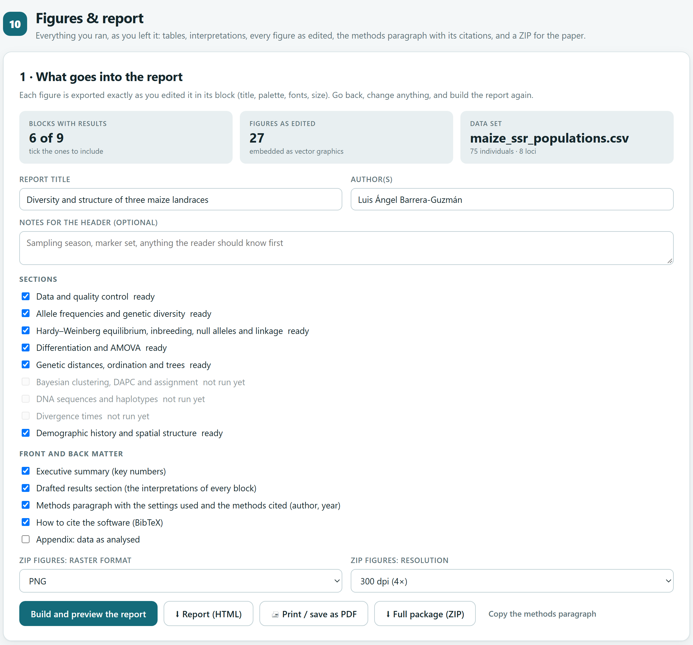
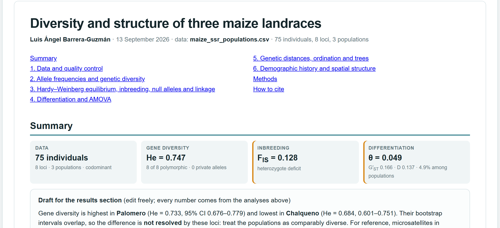
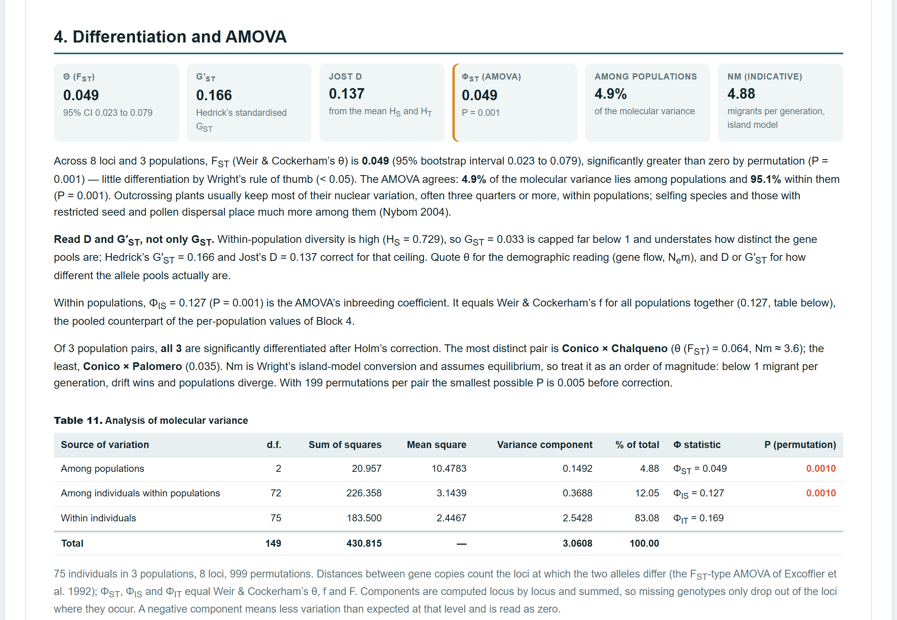
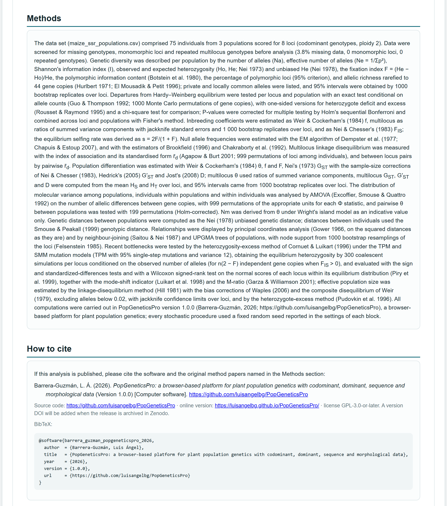

Un análisis termina cuando se puede publicar. Cada figura de la app se ajusta y se exporta en el formato y la resolución que pide una revista. El Bloque 10 reúne lo que corriste en un informe: cifras, tablas, interpretaciones, figuras tal como las dejaste, un párrafo de métodos con los ajustes usados y un paquete ZIP con los datos, las tablas, los árboles y las figuras.
Hay dos caminos para sacar resultados de la app. El primero es figura por figura, desde la fila de exportación que cada figura trae debajo, en cualquier bloque. El segundo es todo a la vez, desde el Bloque 10, cuando ya corriste los bloques que te interesan.
| Salida | Dónde | Para qué |
|---|---|---|
| Una figura en PNG, TIFF, SVG, JPG o WEBP | Fila de exportación bajo cada figura | Un artículo, una tesis o una presentación. |
| Tablas en CSV | Botones de descarga de cada bloque | Rehacer una tabla con el formato de la revista. |
| Informe HTML | Bloque 10 · Report (HTML) | Compartir todo el análisis en un solo archivo que abre cualquier navegador. |
| Informe en PDF | Bloque 10 · Print / save as PDF | Una versión para imprimir o archivar. |
| Paquete ZIP | Bloque 10 · Full package (ZIP) | Material suplementario y respaldo del análisis. |
| Párrafo de métodos | Bloque 10 · Copy the methods paragraph | Punto de partida para la sección de métodos. |
Todas las figuras de la app son gráficos vectoriales y comparten el mismo editor. Bajo cada una, ⚙ Edit figure — titles, colours, fonts, sizes abre dos pestañas: Content & colours, con las opciones propias de esa figura, y Style & typography, con las que tienen todas. Cada cambio redibuja la figura al momento.

La pestaña de contenido cambia con cada figura: un árbol ofrece raíz, forma y soportes; un mapa de calor, su escala de colores; una gráfica de barras, además, Flip axes (horizontal bars) para girarla cuando los nombres son largos. La pestaña de estilo es igual en todas (figura 11.2 y tabla 11.2).

| Control | Opciones | Nota |
|---|---|---|
| Theme | Light, Paper, Dark, Minimal y Journal (ejes negros, sin cuadrícula). | Journal para artículos; Dark para presentaciones con fondo oscuro. |
| Font family | Sans-serif, System interface font, Serif, Monospace. | Son familias genéricas: cada computadora usa la tipografía de ese tipo que tenga instalada. |
| Font size: all · titles · axes & ticks · labels & legend | Multiplicadores de 0.6 a 2.6 (todo) y de 0.6 a 3 (cada grupo). | Si el texto crece, el lienzo crece con él para no cortarlo. |
| Bold axis titles · Gridlines · Dashed gridlines | Casillas. | — |
| Category labels | Auto (partir en renglones y luego inclinar), horizontales, a 45° o verticales. | Solo en gráficas de categorías. |
| Width (px) · Height (px) | 400 a 2400 y 300 a 2000. | Define el tamaño de la figura y, con él, el de las letras al imprimirla (sección 11.2). |
El tema, la tipografía, los tamaños de letra, la cuadrícula y la orientación de las etiquetas son preferencias compartidas: al cambiarlas en una figura, la app las guarda en este navegador y las usa en las figuras que dibuje después, incluso en otra sesión. El título, los colores y el tamaño son de cada figura. Así se consigue que todas las figuras de un artículo tengan el mismo aspecto.

| Tipo | Opciones |
|---|---|
| Paletas para grupos | PopGeneticsPro (predeterminada), Vivid, Harvest, Soil & crop, Ocean, Sunset, Meadow, Bold, Soft, Deep, Pastel. |
| Aptas para daltonismo | Okabe e Ito (2008) y Tol (2021). |
| Blanco y negro | Greyscale. |
| Escalas continuas (mapas de calor) | Viridis, Magma, Inferno, Plasma y Cividis (apta para daltonismo); divergentes Red–Yellow–Blue, Red–Blue, Spectral y Blue–White–Red; secuenciales Greens, Yellow–Green, Browns y Heat. |
| Si… | entonces… |
|---|---|
| La figura va en un artículo | Tema Journal o Minimal, la misma tipografía y tamaños en todas las figuras. |
| Distingues grupos por color | Okabe e Ito o Tol: evitan confundir rojo y verde. En mapas de calor, Viridis o Cividis. |
| Se imprimirá en blanco y negro | Greyscale, y valores o formas que no dependan del color. |
| Los nombres de categorías son largos | Flip axes, o Category labels a 45°. |
| La revista reduce la figura a una columna | Baja Width y sube Font size: all antes de exportar (sección 11.2). |
La fila de exportación tiene tres menús y un botón: Format, Resolution, fondo blanco o transparente y Download figure. A la derecha, la app informa las dimensiones del archivo que va a crear: en la figura 11.1, 3400 × 2040 px · 28.8 × 17.3 cm at 300 dpi.
| Formato | Qué guarda | Cuándo usarlo |
|---|---|---|
| PNG | Imagen sin pérdida con la resolución escrita en el archivo. Fondo blanco o transparente. | Casi siempre; transparente para colocarla sobre otro fondo. |
| TIFF | Imagen RGB sin compresión con la resolución en el archivo. Pesa mucho. | Revistas que piden TIFF. |
| SVG | El dibujo vectorial: se amplía sin perder nitidez y cada texto o color se puede editar. | Retocar en un programa de dibujo vectorial, o figuras muy grandes. |
| JPG | Imagen comprimida con pérdida (calidad 97 %) y resolución en el archivo. | Solo si lo piden; en líneas y letras la compresión deja halos. |
| WEBP | Imagen comprimida para la web, sin resolución en el archivo. | Páginas web y documentos en línea. |
La app dibuja cada figura a 75 píxeles por pulgada. Resolution multiplica los píxeles: 2× son 150 dpi, 4× (predeterminado) 300 dpi, 6× 450, 8× 600 y 12× 900. El tamaño impreso a esa resolución no cambia: una figura de 850 px mide 850/75 = 11.3 pulgadas, 28.8 cm, en cualquier resolución. Lo que la resolución aumenta es la nitidez.
Las letras se dibujan en píxeles: 11 px las marcas de los ejes y las leyendas, 13 px los títulos de los ejes y 17 px el título. A tamaño natural, 11 px son 10.6 puntos. Si la revista reduce la figura, las letras se reducen en la misma proporción: tamaño impreso (pt) ≈ 28.3 × tamaño en px × ancho final (cm) / ancho de la figura (px).
La revista publica las figuras a una columna de 8.5 cm con 600 dpi y letras de al menos 7 pt. La figura de diversidad mide 850 px: reducida a 8.5 cm, sus marcas de 11 px quedarían en 28.3 × 11 × 8.5 / 850 = 3.1 pt. Con Width 400 y Font size: all 1.5, la figura mide 410 px y las marcas 16.5 px, que quedan en 28.3 × 16.5 × 8.5 / 410 = 9.7 pt. Para 600 dpi en 8.5 cm hacen falta 8.5/2.54 × 600 = 2008 px de ancho; Publication · 8× (600 dpi) da 410 × 8 = 3280 px, así que sobra.
El navegador no puede crear imágenes de más de 16 000 píxeles por lado ni de más de 120 megapíxeles. Si la resolución elegida los supera (un árbol con cientos de puntas a 900 dpi, por ejemplo), la app baja la resolución lo necesario, conserva las proporciones y lo avisa en naranja junto al botón. Para más detalle, exporta en SVG.
| Si… | entonces… |
|---|---|
| La revista pide TIFF o PNG | Revisa el ancho final y la resolución que exige; calcula los píxeles necesarios y elige el factor que los alcance. |
| La figura tiene líneas finas y texto | PNG o TIFF a 600 dpi, o SVG; no JPG. |
| La vas a editar después | SVG: cada texto y color se puede cambiar. |
| Es para una presentación | PNG a 150 o 300 dpi, con fondo transparente si la diapositiva tiene color. |
| La revista cambia la resolución del archivo | No importa: lo que conserva la calidad es el número de píxeles. |
El Bloque 10 no calcula nada nuevo: toma lo que ya está en pantalla en los demás bloques. Cada tabla y cada interpretación entran tal como las ves, y cada figura como la dejaste en su editor. Si cambias un ajuste o una figura, vuelve al Bloque 10 y el informe se reconstruye con el cambio.

| Parte | Contenido |
|---|---|
| Encabezado e índice | Título, autores, fecha, archivo de datos, número de individuos, loci y poblaciones, nota opcional e índice con enlaces. |
| Executive summary | Cifras clave: datos, diversidad, endogamia, diferenciación, aislamiento por distancia, grupos, asignación, secuencias, edad de la raíz y estructura espacial, según lo que corriste. |
| Drafted results section | Las interpretaciones de todos los bloques, sin los recuadros de advertencia, como borrador de resultados. |
| Una sección por bloque | Cifras, interpretación, tablas numeradas con título y figuras numeradas. El pie de cada figura agrega los ajustes que la afectan: permutaciones, remuestreos, modelo o semilla. |
| Methods paragraph | Los métodos usados, con los ajustes reales y los autores y años de cada método. |
| How to cite the software | La cita del programa, su licencia y la entrada BibTeX. |
| Appendix: data as analysed | La matriz de datos tal como se analizó (opcional). |
El informe copia lo que muestra cada tarjeta en ese momento. Si en el Bloque 9 elegiste ver una población en 3 · Recent bottlenecks, esa es la que entra en su figura; si una tarjeta está oculta porque no aplica a tus datos, no entra. Los tres botones de salida reconstruyen el informe antes de guardarlo, así que un título o una casilla que cambies después de la vista previa siempre se incluyen.
El párrafo nombra cada método con sus autores y año, y los ajustes con que corrió (permutaciones, remuestreos, modelos, semillas). No trae la lista de referencias completas: tómalas del apéndice E, que las reúne con sus datos y marca las que puede nombrar el párrafo. Revisa también que el párrafo describa lo que de verdad reportarás; si quitaste una sección del informe, sus métodos siguen en el párrafo.
| Carpeta o archivo | Contenido |
|---|---|
report.html | El informe, idéntico al de Report (HTML). |
data/ | Los datos tal como se analizaron (CSV) y, con secuencias, los haplotipos en FASTA. |
tables/ | Frecuencias alélicas, diversidad, Hardy–Weinberg y alelos nulos, estadísticos F por locus, diferenciación por pares, distancias, coordenadas del PCoA, proporciones de ancestría por K y elección de K, asignación, haplotipos, pruebas de cuello de botella, Ne, autocorrelación espacial, autofecundación, PST y edades de los nodos. |
trees/ | Árboles de poblaciones y de individuos (Newick) y árboles fechados (Newick y NEXUS). |
dating/ | El registro de la cadena MCMC del fechado. |
figures/svg/ · figures/png/ | Cada figura en SVG y en el formato elegido (PNG, TIFF, JPG o WEBP) a la resolución elegida. |
methods.txt · README.txt | El párrafo de métodos en texto simple y la guía del paquete. |
| Si… | entonces… |
|---|---|
| Escribes el artículo o la tesis | Copia el párrafo de métodos y adáptalo; rehaz las tablas desde los CSV; exporta las figuras con la regla de la sección 11.2. |
| Compartes el análisis con coautores | El informe HTML: un solo archivo que abre cualquier navegador, con las figuras vectoriales. |
| Preparas el material suplementario | El ZIP: datos, tablas, árboles y figuras. |
| Quieres una copia fija | Print / save as PDF y el ZIP, con las semillas anotadas. |
Con el ejemplo de microsatélites del maíz y cinco bloques corridos con sus ajustes predeterminados, el informe tiene 6 secciones, 20 tablas y 27 figuras, pesa 346 KB y ocupa 30 hojas tamaño carta al imprimirlo.



Para este manual, el paquete ZIP se leyó con un lector independiente del formato: sus 68 archivos de prueba tenían encabezados y directorio correctos y un CRC-32 idéntico al recalculado bit a bit, y sus 27 PNG se abrieron sin error. El TIFF de la figura del AMOVA tenía sus etiquetas en orden, 150 dpi en ambos ejes y los mismos píxeles que el PNG equivalente, sin una sola diferencia. El PNG llevaba 5906 puntos por metro (150 dpi). El editor redibujó las 27 figuras del maíz con cinco combinaciones de tema, tipografía, tamaños de letra de 0.6 a 2.2, ejes girados y anchos de 520 a 1600 px: 135 figuras sin errores y sin ningún texto fuera del lienzo.
El fondo transparente de PNG salía blanco, porque la figura pinta su propio fondo; ahora queda transparente. El JPG no guardaba la resolución y los programas lo leían a 72 o 96 dpi; ahora la lleva. Las descargas del Bloque 10 usaban la vista previa anterior aunque se hubiera cambiado el título o las secciones; ahora el informe se reconstruye en cada salida. El ZIP no incluía los resultados del Bloque 9 ni los del fechado; ahora trae sus tablas, árboles y el registro MCMC. El informe impreso numeraba dos veces el índice, cortaba la entrada BibTeX, partía los recuadros de cifras y separaba títulos de sus tablas; y los símbolos como FST aparecían con guion bajo en los títulos de tablas, figuras y cifras.
Con este capítulo termina el recorrido por los bloques. Los apéndices reúnen los formatos de archivo, las reglas de decisión de todo el manual, un glosario, la solución de problemas, las referencias y los componentes de terceros.